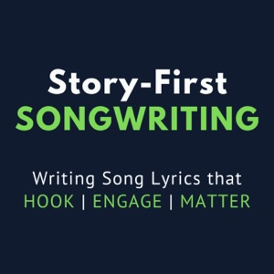
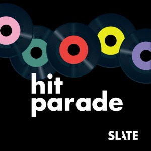
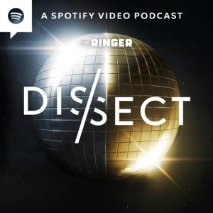
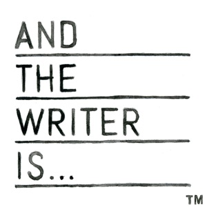
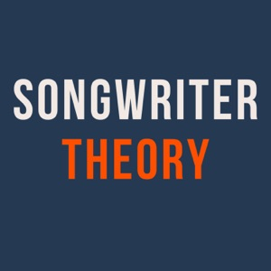
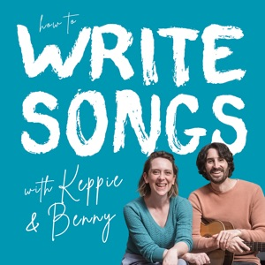

17 Songwriting Podcasts Worth Your Commute
Most podcast roundups ignore the one thing that decides whether you'll actually listen: how long the episodes are. A brilliant two-hour show is no use on a twenty-minute train.
So these are sorted by length, and new episodes are still coming — apart from one at the end that's worth raiding anyway.
Short hop
Under 30 minutes. One trip, one episode, done.

Song Exploder
Hrishikesh Hirway
An artist takes one of their own songs apart, playing the isolated stems — the vocal with nothing under it, the synth line that got buried, the demo nobody heard. Hirway edits his own questions out entirely, so it plays like the artist talking you through it alone.
Thirteen years in and past 300 episodes, so the back catalogue is enormous. It's the best-made thing on this list and the easiest to recommend to anyone.
Start with — The Postal Service, "The District Sleeps Alone Tonight" — the very first episode, still the one people point newcomers to. Or Robyn's "Honey."

Story-First Songwriting
Melanie Naumann
The one that's actually about lyrics, which is rarer than it should be — most music podcasts drift toward production or history. Each episode pulls apart the lyric of a real song and works out why it lands or doesn't.
Smaller and less polished than the big shows. But if your problem is words rather than sounds, it's the most directly useful thing here.
Start with — the breakdown of "Remedy," on why vague writing loses listeners.

Twenty Thousand Hertz
Dallas Taylor
About sound rather than songwriting — the Netflix ta-dum, why a certain snare sounds like 1985, how a film's needle drop gets chosen. It only lands on songwriting now and then, but it will change how you hear your own mixes.
Just past its tenth anniversary, beautifully produced, and the episodes are exactly commute-shaped.
Standard commute
Thirty-five to fifty-five minutes. The sweet spot for most people.

Sodajerker On Songwriting
Simon Barber & Brian O'Connor
If you only add one show, make it this one. The hosts are a working songwriting duo, and it shows — they ask the questions a journalist wouldn't know to ask, and guests answer differently because of it.
They hit fifteen years and roughly 330 episodes this month. The guest list is absurd: McCartney, Nile Rodgers, Suzanne Vega, Brandon Flowers.
Start with — episode 122, Paul McCartney — recorded at LIPA, and genuinely illuminating on how he assembles songs in sections.

Switched On Pop
Nate Sloan & Charlie Harding
A musicologist and a songwriter take apart pop records to explain what's actually happening inside them. You don't need to read notation, which is the whole trick — they'll show you why a chorus lifts using the song itself rather than a stave.
Over 500 episodes now. The companion book turns up on most songwriting reading lists, including ours.

Hit Parade
Chris Molanphy
Chart history, told properly. Molanphy knows the Billboard archive better than almost anyone and uses it to answer questions like why a song spent nine weeks stuck at number two, or how a genre quietly took over the charts.
It's about why songs succeed rather than how they're written — context rather than craft, and useful for it.

Dissect
Cole Cuchna
One album per season, one song per episode, analysed line by line and chord by chord. Closer to a university course than a chat show, and it rewards listening in order.
Ten years old this year. Mostly hip-hop, though not exclusively.
Start with — season one, episode one — Kendrick Lamar's To Pimp a Butterfly. Don't skip ahead; the seasons build.
Sound Opinions
Jim DeRogatis & Greg Kot
Two critics arguing about records for twenty-one years and more than 1,400 episodes. Reviews, interviews, themed lists, and the occasional genuinely heated disagreement.
Criticism rather than craft — but hearing people articulate precisely why something works is its own education.

Broken Record
Rick Rubin, Malcolm Gladwell, Justin Richmond & Bruce Headlam
“Liner notes for the digital age” — long conversations with musicians, often led by Rubin himself, who is very good at getting people to say things they haven't said before.
Honest caveat: the schedule has slowed and much of the recent feed is re-released older episodes. Treat it as an archive to mine rather than something to follow weekly.
Start with — John Frusciante, widely held to be Rubin's most open conversation on the show. André 3000 and Kenny Beats are the other two people always name.
Long drive
An hour and up. For motorway stretches and very bad traffic.

And The Writer Is…
Ross Golan
The one about songwriting as a job. Golan has written hits for Ariana Grande, Selena Gomez and Maroon 5, and he interviews other professionals about the parts nobody romanticises: publishing deals, splits, who was really in the room, how a song got cut.
If you want to understand the industry rather than the craft, nothing else comes close.

Songcraft: Spotlight on Songwriters
Scott B. Bomar & Paul Duncan
Career-spanning interviews that usually anchor on one specific song. Nearly 300 episodes deep, and the guests skew toward writers with long catalogues rather than whoever has a record out this month.
Start with — Bernie Taupin on "Tiny Dancer." A near-perfect example of the format.

Tape Notes
John Kennedy
The longest here, and the most technical. Kennedy gets the artist and their producer in the same room and walks through how a record was physically built — which take survived, what the demo vocal was recorded on, why they kept the mistake.
If you work in a DAW, this is the one. If you don't, it may be more detail than you want.
Start with — Giles Martin on the Rubber Soul reissue.

Strong Songs
Kirk Hamilton
Hamilton takes a single song apart at the keyboard, playing the parts as he explains them. It's the most musically literate show here — he'll happily spend ten minutes on why one chord substitution changes everything.
It's slowed to about monthly, but there are around 180 episodes banked.
Start with — the recent "Peg" episode, on Steely Dan — a good sample of what he does.
If you'd rather be taught than entertained
Straightforwardly instructional — less storytelling, more technique.

Songwriter Theory
Joseph Vadala
Solo episodes on craft, aimed squarely at writers whose songs are “almost great.” Practical, unglamorous, and specific about fixes.

SongTown on Songwriting
Clay Mills & Marty Dodson
Two Nashville professionals on practical problems — knowing when a song is finished, getting unstuck on a melody, co-writing etiquette. Dodson co-wrote Song Building, which turns up in our exercises post.

How To Write Songs
Keppie Coutts & Benny Romalis
Two working writers talking craft, with recent runs on melody and on what AI actually means for songwriters. It's a young show with only a handful of episodes so far, so you'll catch up fast.
For the archive only
Not releasing any more — but worth raiding.

The Trap Set
Joe Wong
Nominally about drummers, really one of the best interview shows music has produced. Wong is unusually good at getting people to talk about failure, doubt and the years that didn't work out.
Nothing new since mid-2025, so don't subscribe expecting episodes. Nearly 400 of them are sitting there regardless.
Where to start
- Twenty minutes and you want craft — Song Exploder.
- You write lyrics and want lyric help — Story-First Songwriting.
- One subscription only — Sodajerker.
- You want to understand the music, not just the story — Switched On Pop, then Strong Songs when you're ready for more.
- You want to do this for a living — And The Writer Is…
- You make records as well as write them — Tape Notes.
The Apple links go straight to each show; the Spotify and YouTube buttons run a search, since those platforms shuffle their URLs around more than is helpful.
One practical note, since this is a commute list. The ideas these shows give you arrive while you're driving or standing on a platform, which is the worst possible moment to write anything down. However you capture them — voice memo, notes app, Jam Room — have it ready before you press play. The episode will wait ten seconds.